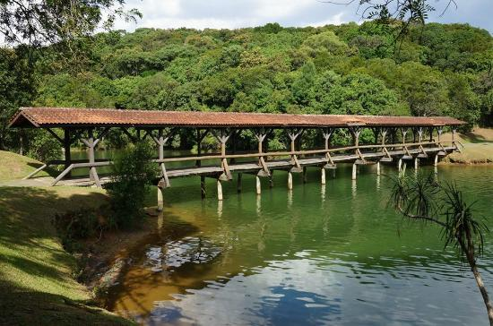

Parques de Curitiba
Barigui
Situado perto do centro de Curitiba, o parque Barigui é um dos mais frequentados da cidade e foi inaugurado em 1972. Além de florestas primárias e secundárias preservadas, o visitante irá encontrar quero-queros, garças, preás e muitos outros animais. Um verdadeiro recanto de calmaria e beleza verde em plena área urbana.
Tanguá
Dois lagos, uma cascata, mirantes, túnel artificial e um suntuoso complexo de pedreiras são algumas das maravilhas que o visitante irá encontrar no Parque Tanguá. Apontado por muita gente como o mais bonito de Curitiba, o parque oferece o espaço para a mais completa diversão ao ar livre na sua trip. Imperdível.
Tingui
Parte de um projeto da prefeitura de Curitiba que previa a criação de um parque linear ao longo do rio Barigui, esse atrativo possui uma pista de caminhada que oferece belas paisagens dos lagos, ciclovias e até quadras de esportes. Mesmo se você não quiser dar aquela corridinha ou praticar esportes, irá ficar mais que satisfeito. O local conta com o belo Memorial Ucraniano, onde são realizados diversos eventos e exposições ao longo do ano.
Passaúna
O Parque do Passaúna foi criado em 1991 com o objetivo de preservar as águas do rio Passaúna. Hoje ele é um importante espaço de lazer em Curitiba e oferece boa infraestrutura para quem gosta de curtir a vida no contato árvores e gramados. O que encontrar por lá? Trilha ecológica junto ao lago que passa por pontes de madeira, mirante, churrasqueiras e muitos exemplares da flora e da fauna.
Barreirinha
Três lagos de águas nascentes e mata nativa com aquele irresistível aspecto de intocada são o ponto alto do Parque Barreirinha. O local ainda não é muito visitado, pode-se dizer que é desconhecido até por muitos curitibanos, mas vale fazer essa descoberta.
São Lourenço

O Parque São Lourenço foi inaugurado em 1972 e é um dos principais xodós dos curitibanos. Sem dúvidas o lago no centro e a exuberante vegetação ao redor são mais que um convite aos amantes de corridas, piqueniques ou singelas conversas ao ar livre. E olha só essa surpresa para a criançada: há no local uma pista própria para a descida com carrinhos de rolimã.
Parque do Bacacheri
Nesse parque verde há quadras de vôlei, de praia e futebol, churrasqueiras e lindo bosque com diversas espécies nativas. Resumindo: lugar perfeito para aquela recreação em manhãs ensolaradas. Caminhe bastante e fotografe os ipês, pinheiros, aroeiras e todas as magníficas mostras da flora paranaense.
Jardim Botânico

É justo dizer que a imagem do Jardim Botânico com a majestosa estufa ao fundo seja a que mais represente a beleza de Curitiba para o Brasil, certo? Ao conhecer pessoalmente, você irá perceber que a atração não é especial somente por fotografia. Abrigando mais de 300 espécies botânicas, o parque é agraciado com lindos jardins geométricos, o Museu Botânico Nacional e muito mais. Parece clichê e talvez seja mesmo, mas não deixe de visitar essa obra prima da natureza e da arquitetura.